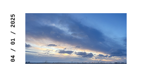
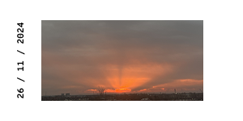
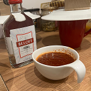
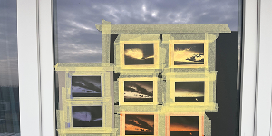

Vērošanas dizains. Debesu poētika ir dizaina pētniecības darbs, kas reflektē par vērošanas emocionālo un vizuālo pieredzi, izceļot procesa nozīmi kā darba pamatvērtību.
Tas balstīts divus mēnešu ilgā debesu dokumentešanā foto, video un zīmējumu formātā, par lokāciju izvēloties Dārzciema dzīvokli blokmājas devītajā stāvā.
 Vērojumi
Vērojumi tika veikti laika posmā no 2024. gada 26. novembra līdz 2025. gada 27. janvārim. Tie tika fiksēti katru dienu laikā no plkst. 8:00–9:00, no 9. stāva balkona daudzdzīvokļu ēkā Dārzciemā.
Vērojumi dokumentēti gan video fiksācijās, gan rokas zīmējumos ar grafīta zīmuli. Pēc noteiktā novērojumu perioda beigām vērošanas prakse dabiski turpinājās, kļūstot par daļu no ikdienas ieradumiem. Tā nebija iepriekš plānota, taču regulāra uzmanības pievēršana debesīm saglabājās arī ārpus sākotnēji noteiktā pētījuma laika posma. Tāpēc darba turpmākajā procesā tika iekļauta arī vērojumu dokumentācijas, kas radušās pēc 2025. gada 27. janvāra.
Darba autori lokāciju nolēma izvēlēties pēc principa – kādas ir noteiktās vides priekšrocības, nevis mīnusi. Autores atklāja, ka dabas vērošanai pilsētā ir priekšrocība burtiski atrasties augstāk par zemi un tuvoties debesu jumam, lai redzētu tajā notiekošos procesus. Par izpētes lokāciju tika izvēlēta Rīga,
Franča Trasuna iela 24, 9. stāva dzīvoklis ar balkonu.
Par izpētes objektu kļuva Rīgas debesis.
Darba gaita noritēja ziemas mēnešos, savukārt lokācija, kurā abi autori atradās, bija urbānā pilsētvide - Rīgas Centrs un Rīgas mikrorajons Dārzciems. Daba šajos apstākļos šķita attālināta – gan fiziski, gan emocionāli. Noskaņojums sabiedrībā, kā arī pašu autoru ikdienas pieredzē, bieži tika raksturots ar frāzēm “viss ir pelēks” un “gribas palikt mājās”.
Drukātā publikācija
Procesa specifika – saules klātbūtnes nepieciešamība – ļāva Debesu vērošanas staciju izmantot nevien, lai uzņemtu attēlus, bet arī, lai tos arī attīstītu.
 Saturiski analogajai publikācijai nav jābūt lineāri veidotai. Publikācijā parādās tikai pārnestie debesu attēli. Tika atrasti veidi, kā ar publikācijas formas palīdzību nodot skatītājam vērošanas pieredzi un saglabāt lēnās pētniecības praksi publikācijas veidošanā. Analogā publikācija veidota bezgalīgā jeb mūžīgā papīra locījuma veidā (infinity fold vai neverending fold). Šāda formāta publikācija apzināti skatītājam rada ilūziju, ka publikāciju var atlocīt mūžīgi un tai nav noteikta sākuma un beigu punkta.
Digitālā publikācija
Digitālās publikācijas vizuālā valoda izstrādāta, analizējot līdzautores Bebres veikto vērojumu dokumentāciju fotogrāfiju, video un grafīta zīmējumu veidā, kā arī attēlus, kas radīti drukātajai publikācijai, izmantojot anotipa tehniku.
Debesu ainavu vizuālo interpretāciju veido pieci autores definēti vizuālie parametri, kas raksturo debesu vērošanas vizuālo un emocionālo pieredzi.
Mākoņu tekstūra
No fotogrāfijas tika apstrādāta melnbalta tekstūra, kas attēlo mākoņu tekstūras intensitāti no mierīgām līdz pat ļoti sadrumstalotām.
Melnbaltie tekstūras attēli tiek ģenerēti smalkā līniju rakstā, kur tumšajos laukumos līnijas izvietotas ļoti blīvi, bet gaišajos – gandrīz nav.
Mākoņu intensitāte
Grafīta zīmējumu štrihā tiek novērota mākoņu intensitāte. Līniju rakstam tiek piešķirts parametrs diapazonā no 1 (skaidras vai mierīgas debesis, vienmērīgi mākoņi) līdz 5 (intensīvas, sadrumstalotas mākoņu formas), kas nosaka ģenerēto līniju virzienu.
Debess krāsojums
Katrai debesu ainavai piešķirts unikāls RGB krāsu kods, balstoties uz analogajā publikācijā radītās krāsu paletes. Krāsā iezīmēts līniju raksts.
Pilsētas proporcija
Pilsētas laukuma proporcija pret debesu laukumu tiek attēlota izmantojot caurspīdīgu taisnstūri. Tā augstums atšķiras, balstoties uz konkrētās ainavas pilsētas proporciju.
horizonta kontrasts
Horizonta līnija fotogrāfijās atšķiras ar krāsu un gaismas kontrastu pret debesīm. Skaitlis 1 pilsētas proporcijas taisnstūra augšējo malu pilnībā izpludina krāsas gradientā, bet skaitlis 100 ģenerē taisnstūri ar asām, skaidrām malām.